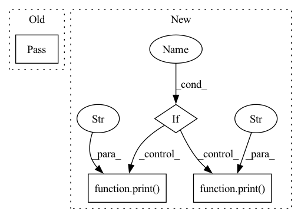

Pattern ID :10561
Before Change
return grad
def fit(self, data: TensorType["num_obs", "obs_dim"] = None):
pass
def grad_step(
self, x_curr: TensorType["num_obs", "obs_dim"]
) -> TensorType["num_obs", "obs_dim"]:After Change
x_curr = self.optimized_preds.clone()
for i in tqdm(range(self.max_iter)):
x_new = self.step(x_curr)
if self.verbose :
print(f"iteration {i}" )
print(f"x_curr: {x_curr}" )
print(f"x_new: {x_new}")
if torch.allclose(x_curr, x_new, atol=self.tol):
break
x_curr = x_new.clone()In pattern: SUPERPATTERN
Frequency: 3
Non-data size: 4
Instances Fragment ID: 36740849
Project Name: danbider/lightning-pose
Commit Name: e75da0b591c6c6f31e8ac784f4c35a0cc9954b1f
Time: 2022-03-31
Author:
File Name: lightning_pose/postprocess/projected_gd.py
M Class Name: ProjectedGD
N Class Name: ProjectedGD
M Method Name: fit(1)
N Method Name: fit(2)
M Parent Class: object
N Parent Class: object
M File Name: lightning_pose/postprocess/projected_gd.py
N File Name: lightning_pose/postprocess/projected_gd.py
M Start Line: 37
M End Line: 38
N Start Line: 75
N End Line: 90
Before Change
return grad
def fit(self, data: TensorType["num_obs", "obs_dim"] = None):
pass
def grad_step(
self, x_curr: TensorType["num_obs", "obs_dim"]
) -> TensorType["num_obs", "obs_dim"]:After Change
x_curr = self.optimized_preds.clone()
for i in tqdm(range(self.max_iter)):
x_new = self.step(x_curr)
if self.verbose :
print(f"iteration {i}" )
print(f"x_curr: {x_curr}" )
print(f"x_new: {x_new}")
if torch.allclose(x_curr, x_new, atol=self.tol):
break
x_curr = x_new.clone() Fragment ID: 36740853
Project Name: danbider/lightning-pose
Commit Name: 588fc9e90d46e2d92c8baaff98cde06934f584fc
Time: 2022-03-31
Author:
File Name: lightning_pose/postprocess/projected_gd.py
M Class Name: ProjectedGD
N Class Name: ProjectedGD
M Method Name: fit(1)
N Method Name: fit(2)
M Parent Class: object
N Parent Class: object
M File Name: lightning_pose/postprocess/projected_gd.py
N File Name: lightning_pose/postprocess/projected_gd.py
M Start Line: 37
M End Line: 38
N Start Line: 75
N End Line: 90
Before Change
for node_set in nx.algorithms.components.connected_components(G) :
ans.extend(split_text_region(bboxes, node_set))
return ans
pass
def get_mini_boxes(contour):
bounding_box = cv2.minAreaRect(contour)
points = sorted(list(cv2.boxPoints(bounding_box)), key=lambda x: x[0])After Change
fontsize = np.mean([bboxes[idx].font_size for idx in region_indices])
std = np.std(edge_weights)
mean = np.mean(edge_weights)
if verbose :
print("edge_weights" , edge_weights)
print(f"std: {std}, mean: {mean}" )
if (edge_weights[0] <= mean + std * sigma or edge_weights[0] <= fontsize * (1 + gamma)) and std < std_threshold :
return [set(region_indices)]
else :
if edge_weights[0] - edge_weights[1] < std * sigma and std < std_threshold : Fragment ID: 36740860
Project Name: zyddnys/manga-image-translator
Commit Name: 70a7e7471c704186ca83cfda207696207b7affc3
Time: 2021-08-24
Author: zyddnys@outlook.com
File Name: textline_merge/__init__.py
M Class Name: AnonimousClass
N Class Name: AnonimousClass
M Method Name: split_text_region(6)
N Method Name: split_text_region(5)
M Parent Class:
N Parent Class:
M File Name: textline_merge/__init__.py
N File Name: textline_merge/__init__.py
M Start Line: 91
M End Line: 102
N Start Line: 56
N End Line: 105